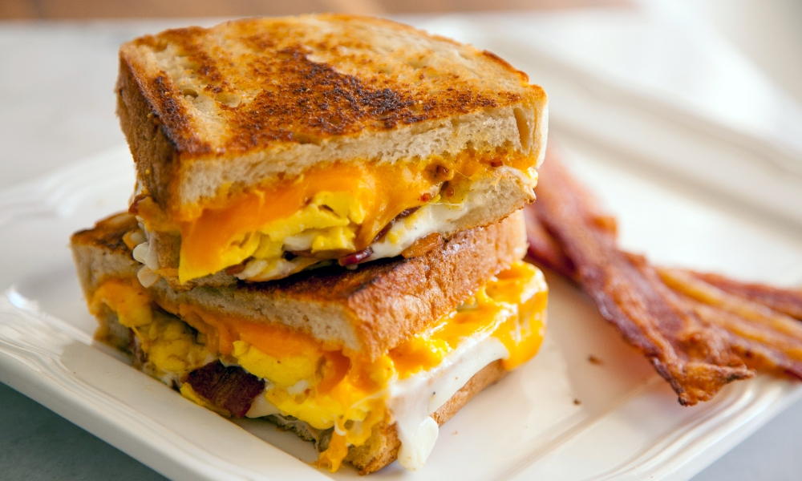

Easy Bacon Egg and Cheese Breakfast sandwich

Bacon egg and cheese sandwhich
Quick and easy breakfast sanwhich recipe. your GF/BF will love it!
Ingredients
- bread-- brioche is best!
- bacon-- THICK-CUT
-
eggs--
cage-free chickens are happier--
support that shit
-
cheese-- EXTRA-sharp cheddar FTMFW!
- grill press-- you won't regret it. Promise!
Steps
- cut your bacon in half and cook in a skillet on medium high
- use the bacon grease to cook some sunny side up eggs
- season them obviously-- salt, pepper, garlic, etc...
-
spoon some bacon grease on top of the eggs to help the top cook a little
better-- don't want them too runny
-
add half a slice of cheese on top of the egg-- let it melt a little
-
prep the bread with a slice of cheese, when the eggs are done, place on
top, add bacon slices, top it off with another slice of cheese and bread
-
use a grill press to get your sandwich nice and toasty--don't press too,
hard too soon-- this is optional but also
very important.